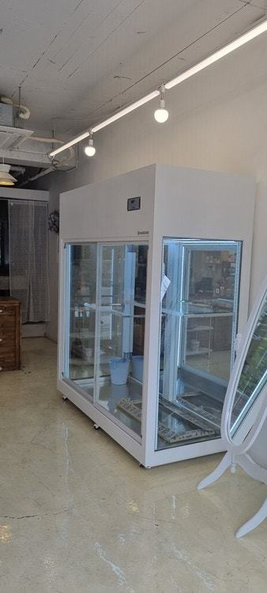
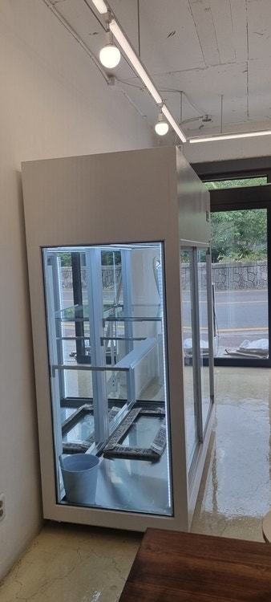
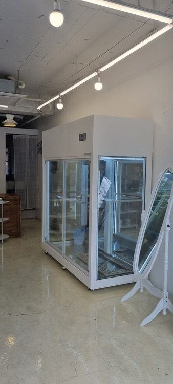
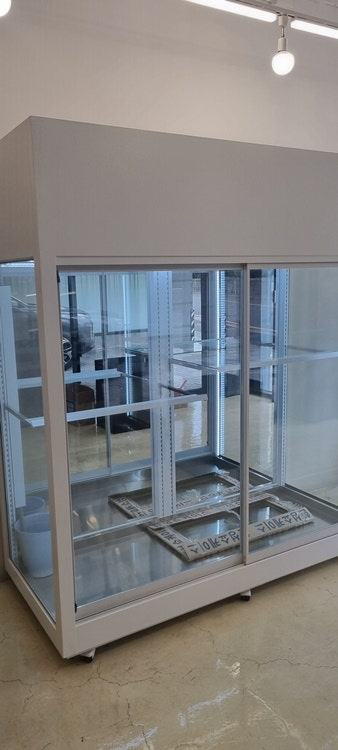
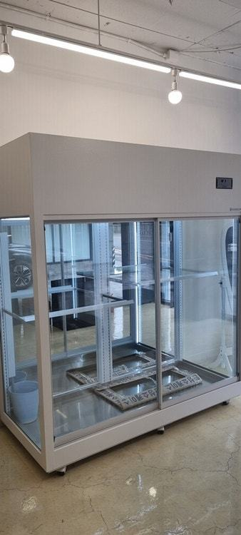
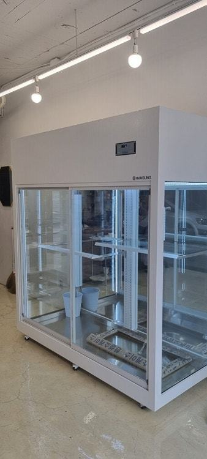
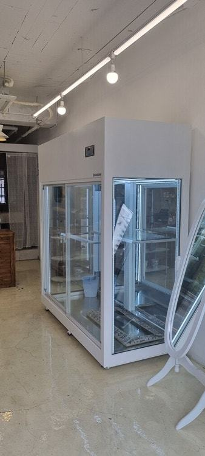
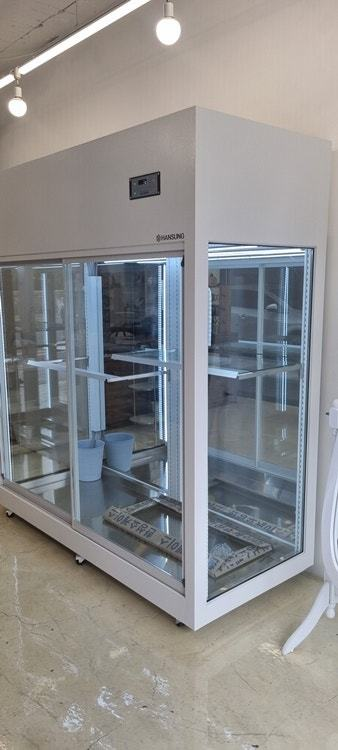
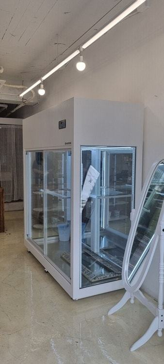

꽃냉장고
꽃냉장고 설치, 꽃집 안 자리 정하는 다섯 가지 기준

꽃냉장고는 햇빛이 직접 드는 창가와 출입문 바로 앞을 피하고, 물통을 넣고 빼는 작업대와 가까우면서 밖에서 꽃이 보이는 자리에 두는 것이 기본입니다. 바닥 물기와 배수, 전용 전원, 기계실 통풍까지 설치 전에 확인해 두셔야 꽃 상태와 냉장고 수명이 함께 지켜집니다.
안녕하세요. 꽃집 인테리어에 맞춰 꽃냉장고를 설계하고 설치까지 맡는 한성쇼케이스입니다.
꽃집을 준비하시는 사장님들은 대개 인테리어 그림을 먼저 그려 두시고 냉장고 자리를 마지막에 정하십니다.
그런데 상담을 하다 보면 "창가에 두면 예쁠 것 같은데 괜찮을까요?" 하는 질문이 꼭 나옵니다.
꽃냉장고는 매장의 얼굴이면서 동시에 생화를 지키는 장비라, 보기 좋은 자리와 꽃에 좋은 자리가 늘 같지는 않습니다.
물통을 하루에도 여러 번 넣고 빼는 작업 동선까지 생각하면 자리 선정이 생각보다 까다롭습니다.
오늘은 꽃냉장고 설치 자리를 정할 때 따져 볼 기준과, 설치 전에 미리 챙겨 둘 것들을 정리해 보겠습니다.
1. 햇빛과 바람이 직접 닿지 않는 곳
통유리 창가는 밖에서 꽃이 잘 보여 인기 있는 자리지만, 오후 햇빛이 유리를 직접 데우면 냉장고가 쉬지 못하고 돌아가고 문 유리에 결로도 잘 생깁니다.
창가에 꼭 두고 싶다면 햇빛이 비스듬히 드는 방향인지, 블라인드나 차양을 둘 수 있는지 먼저 확인해 보세요.
출입문 바로 앞도 피하시는 게 좋습니다. 손님이 드나들 때마다 바깥 공기가 들이쳐 냉장고 주변 온도가 오르내리고, 겨울에는 찬바람 때문에 문을 열었을 때 안팎 온도 차로 김이 서립니다.
- 오후 햇빛이 문 유리에 직접 닿는지
- 출입문과의 거리
- 에어컨·난방기 바람이 향하는 방향
2. 물통 무게와 바닥 물기
꽃냉장고에는 물을 채운 버킷이 여러 개 들어갑니다. 바닥이 기울어 있으면 냉장고 문이 저절로 열리거나 물통이 한쪽으로 쏠리니, 설치 전 바닥 수평을 꼭 확인해 주세요.
물통을 넣고 빼다 보면 냉장고 앞 바닥에 물이 떨어집니다. 미끄럼 방지 매트를 깔 자리와, 내부 배수가 빠질 위치를 미리 정해 두시면 청소가 훨씬 수월합니다.
배수관에 잎이나 줄기 조각이 끼지 않도록 관리하는 것도 잊지 마세요.


3. 작업대와의 거리
꽃다발이나 꽃바구니를 만들 때는 냉장고에서 꽃을 꺼내 작업대로 옮기고, 남은 꽃을 다시 넣는 일이 반복됩니다.
냉장고와 작업대가 멀면 꽃이 실온에 나와 있는 시간이 길어지고 바닥에 물이 길게 떨어집니다.
작업대에서 몸을 돌려 바로 문을 열 수 있는 거리가 이상적입니다. 문이 열리는 방향도 작업대 쪽을 막지 않도록 정해 두세요.
여닫이라면 열리는 반경만큼, 슬라이딩이라면 문짝이 겹치는 위치를 고려합니다.
- 작업대에서 문까지의 거리
- 문이 열리는 방향과 반경
4. 밖에서 보이는 방향과 설비 조건
꽃냉장고는 그 자체로 진열장입니다. 매장 밖 보행자 눈높이에서 냉장고 안 꽃이 보이도록 방향을 잡으면 지나가던 손님의 발길을 붙잡는 역할을 합니다.
뒷벽까지 통유리로 만들어 양쪽에서 꽃이 보이게 설치하는 매장도 있습니다.
설비 조건은 전용 콘센트와 기계실 통풍 공간입니다. 가구나 벽에 매립하는 디자인이라면 통풍구 위치를 제작 단계에서 함께 정해야 합니다.
꽃 보관 온도는 품종에 따라 다르지만 일반 생화는 5℃에서 10℃ 사이로 운용하는 경우가 많아, 설치 후 첫 며칠은 온도 변화를 지켜보시길 권합니다.
체크리스트
- 직사광선·출입문·냉난방 바람 피하기
- 바닥 수평과 물기 대책
- 작업대와 문 열리는 방향
- 밖에서 보이는 시선 방향
- 전용 콘센트와 기계실 통풍
1호점에 이어 2호점까지 설치한 꽃집 꽃냉장고
1호점을 열 때부터 한성쇼케이스와 함께하신 대표님이 2호점을 내시면서 다시 맡겨 주신 꽃냉장고입니다.
꽃집은 온도 유지와 인테리어를 함께 봐야 해서, 1호점 때 설계를 맡았던 20년 경력 디자이너가 이번에도 매장을 직접 방문해 상담했습니다.
2호점은 1호점과 다른 분위기를 원하셔서 심플하고 깔끔한 디자인으로 방향을 잡았습니다. 맞춤 제작이라 설치까지 기간이 넉넉히 필요했는데, 대표님께서 기다려 주신 덕분에 매장에 맞춰 세심하게 마무리할 수 있었습니다.
설치 이후에는 A/S 전담팀이 계속 관리를 이어 갑니다.








자주 묻는 질문
주문하고 설치까지 얼마나 걸리나요?
맞춤 제작이라 디자인 상담과 제작 기간이 필요합니다. 오픈 날짜가 정해져 있다면 인테리어 일정과 함께 여유 있게 상담을 시작하시는 편이 좋습니다.
창가 자리에 꼭 두고 싶은데 방법이 있을까요?
햇빛이 드는 시간과 방향을 확인하고 차양이나 블라인드를 함께 두면 부담을 줄일 수 있습니다. 결로 방지 유리를 적용하는 것도 함께 검토해 보세요.
기존 매장에서 쓰던 꽃냉장고를 옮겨 설치할 수 있나요?
가능한 경우가 많지만 새 매장의 반입 경로와 자리 치수, 전원 조건을 먼저 확인해야 합니다. 옮긴 뒤에는 바로 꽃을 넣지 말고 온도가 안정됐는지 확인하세요.
매장 조건에 맞춰 만드는 한성쇼케이스
원하시는 제품 사진과 설치할 공간 사진만 보내 주셔도 매장에 맞는 구성을 추천해 드립니다.
- 전국 240여 개 A/S 전담 센터 운영
- 본사 대량 자재 매입으로 품질 대비 합리적인 가격
- 유럽제·삼성 냉각 콤프레셔 적용
- 국내 최초 쇼케이스 전문 디자이너 상주
매장 폭과 원하는 진열 구성을 알려 주세요. 실측과 견적을 안내해 드립니다.
031-986-2458